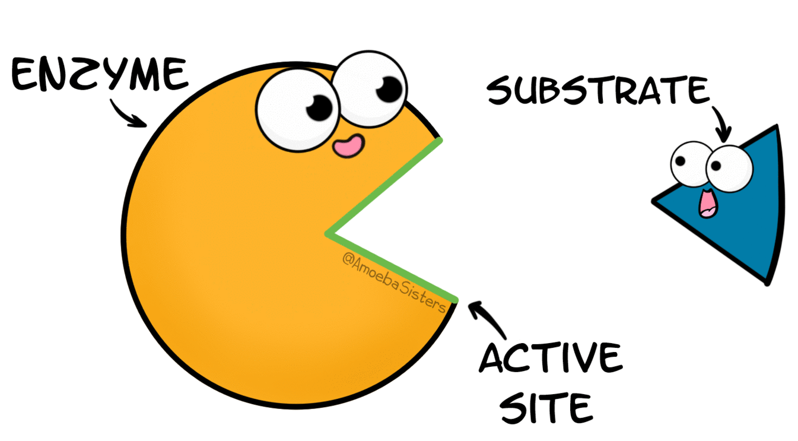
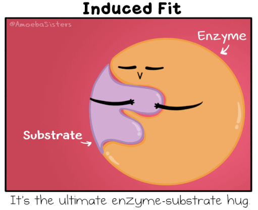
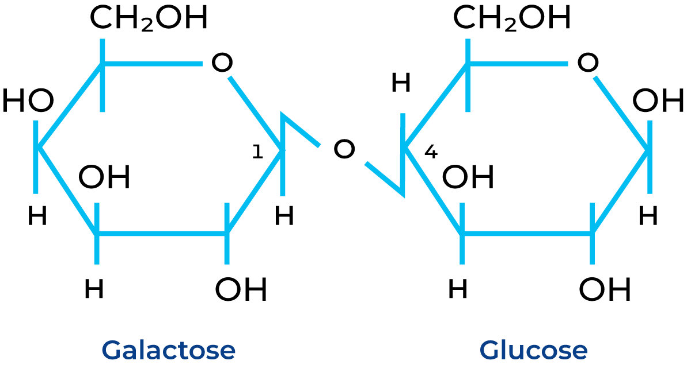
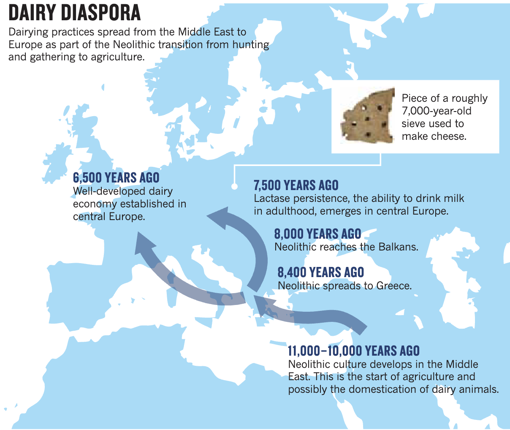
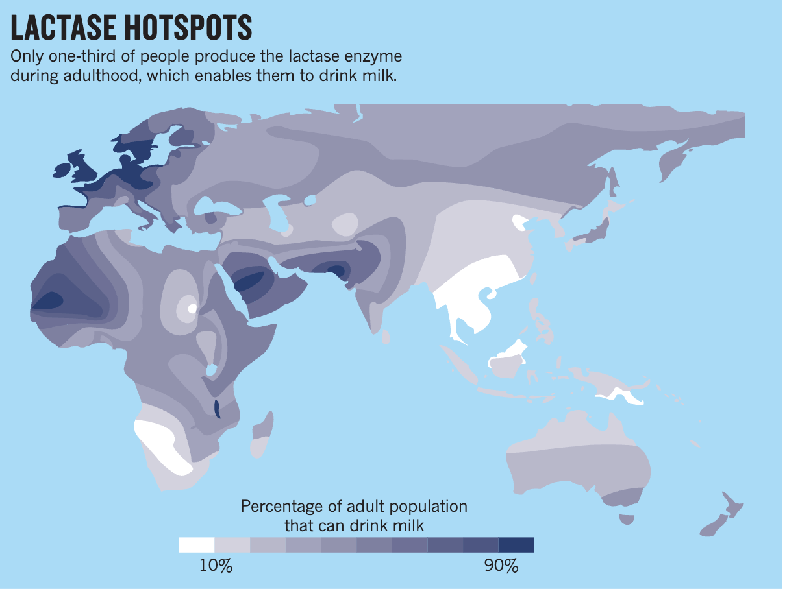
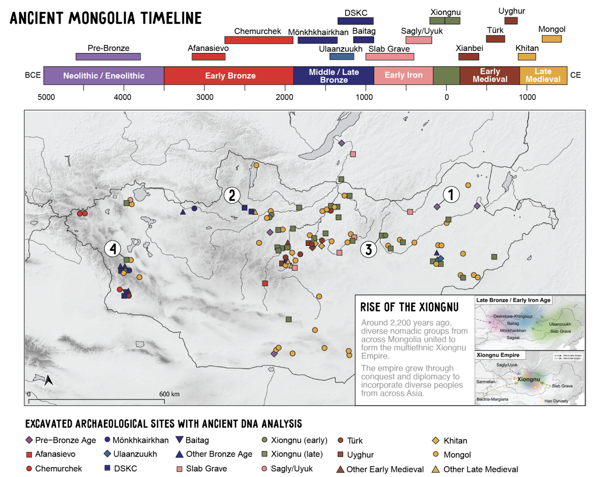
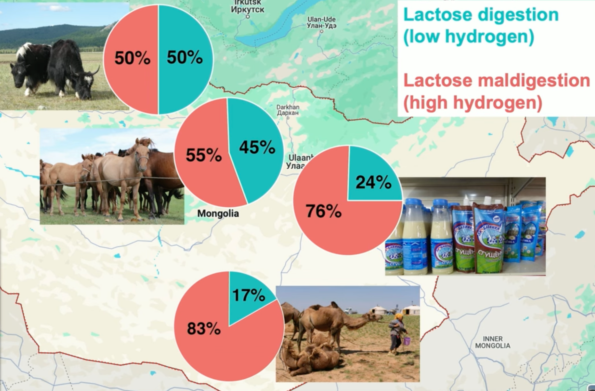
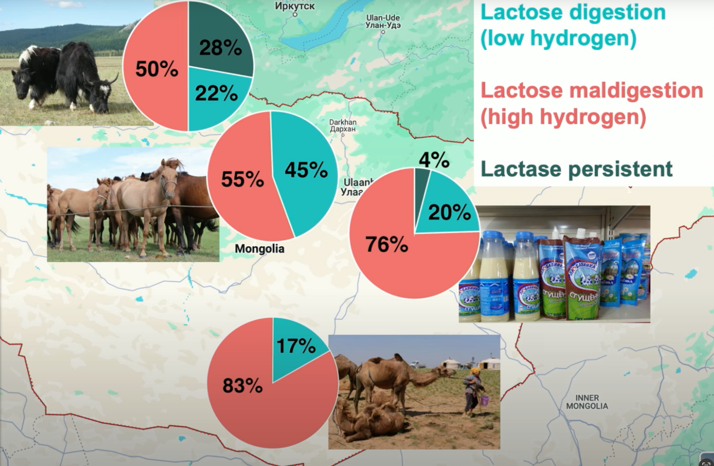
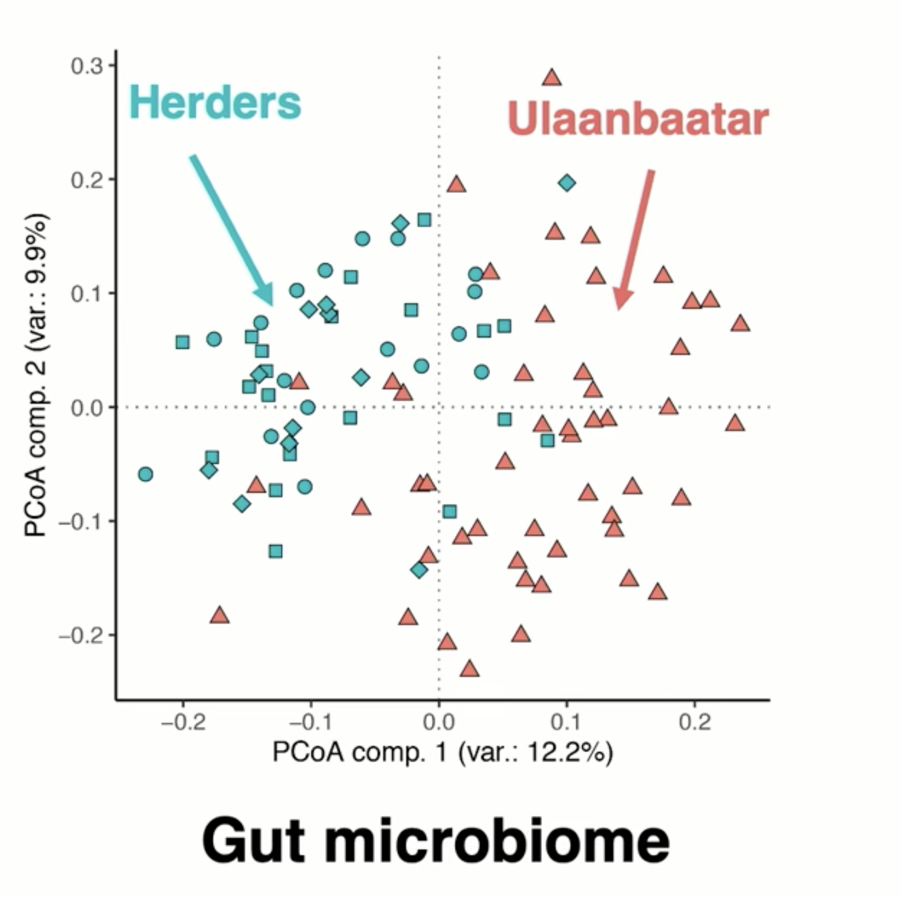

Нууц Амьдрал
Бичвэрийн өмнөх асуултууд
- Хүнийг сүү боловсруулдаг болгосон генийн мутаци гэж юу вэ?
- Монголчуудын сүү цагаан идээг хэрэглэсээр ирсэний нууц нь юу вэ?
- Археологичид, антропологичид яагаад сүүний хэрэглээний тухай судлав?
- Монголчуудын сүүний хэрэглээний тухай хийсэн судалгаа хэрхэн хүн төрөлхтөний сүүний хэрэглээний түүхийн ойлголтыг антропологийн шинжлэх ухаанд шинээр тайлбарласан бэ?
- Сүүний уламжлалт технологийн шинжлэх ухааны тайлбар юу вэ?
- Археологи болон генетикийн шинжлэх ухааны аргуудыг хэрхэн хүн төрөлхтний түүхийг ойлгоход ашигладаг вэ?
Энэ бичвэрт гарах нэр томъёонуудыг энгийнээр тайлбарлах нь
Парадокс: Зөрчилтэй санаа.
Ген: Амьд биетийн бие махбод, үйл ажиллагаа, өвлөгдөх шинж чанарыг зааж өгдөг удамшлын мэдээллийн нэгж. Ген нь хүн амьтны эсийн цөмд байх ДНХ дээр хадгалагддаг.
Лактоз: Сүүний сахар буюу нүүрс ус.
Хоолны бүтэц: Хоол хүнс нь нүүрс ус, уураг, өөх тос, эслэг, ус, витамин, эрдэсээс бүрддэг. Эдгээр бүрдэлүүд нь хүний биеийн өөр өөр үйл ажиллагаанд оролцдог.
Уураг: Бие махбодын гол баригдах тоосго нь гэж хэлж болох бодис. Хүний булчин, үс, арьс, хумсыг бүтээх, эсийг засах, шинээр бий болгох, даавар үүсгэх, бодисын солилцоог явуулах энзим болох, дархлааны гол эд анги болох гэх мэт олон үүрэгтэй.
Тос: Биеийн энергийн нөөц болох, тархины үйл ажиллагаа, эсийн хананы бүтэц, дааврыг бий болгох үүрэгтэй бодис.
Нүүрс ус (сахар): Биеийн гол энергийн эх үүсвэр. Хөдлөх, бодох гэх мт үйл ажиллагааны гол энергийн эх үүсвэр болдог бодис.
Энзим: Биологийн хоол хүнсийг задлах, биеийн ашиглаж чадах энергийг бий болгох, ДНХ-ийн хуулбарлал, засвар гэх мэт олон үйл ажиллагааны гол химийн урвалыг хурдасгадаг хурдасгуур. Энзим хурдасгуугүйгээр эдгээр химийн урвалууд маш удаан явагдана.
Геноми: Эс, организмын бүтэн генийн мэдээллийн багц. Жишээ нь ихэнх хүний эсэд 23 хос ДНХ-ын хромосом гэж нэрлэгдсэн бүтэц нь бүтэн удамшлын генийн мэдээллийн багц болдог.
Нарийн гэдэс: Хоолыг боловсруулж, боловсорсон эрдэс бодис, шим тэжээлийг цус руу шингээдэг гол эрхтэн.
Бүдүүн гэдэс: Боловсорч чадаагүй хоолны үлдэгдэлийг бактеруудын тусламжтай исэлдүүлэн хий болон өтгөн үүсгэдэг.
Микроб: Маш жижиг хэмжээтэй бактери, вирус, мөөгөнцөр, археа, протистууд гэсэн амьдралууд.
Микробиом: Хүний бие дотор ба гаднах орчинд байдаг микробуудын бүгдийн нэгдэл.
Монголчууд сүү, цагаан идээг боловсруулах генийн чадваргүй
Гадаадад удаан сүү цагаан идээ бараг хэрэглэхгүй байж байгаад Монголын хөдөө буцаж ирээд, өдөр тутамдаа сүү цагаан идээ хэрэглэхэд миний гэдэс ихээр дүүрч, тавгүй санагддаг. Гадаадад зарим хүмүүс өөрсдийгөө лактозны үл тэвчилтэй гэх буюу сүү боловсруулах чадварггүй гэж өөрсдийгөө хэлэх нь бий. Зарим монголчуудад ч бас сүү уухад гэдэс өвдөнө, дугарна, хий ялгарна, хүндрэх хэрэг гарна гэх мэт шинж тэмдэг илэрдэг.
Гэтэл яагаад ийм үзэгдэл тохиолддог юм бол?
3000 гаруй жилийн турш мал маллаж ирсэн нүүдэлчин монголчуудын хувьд сүү, цагаан идээ хоол хүнснийх нь хамгийн чухал хэсэг нь үргэлж байсаар ирсэн билээ. Гэтэл сүүг гэдсэндээ боловсруулж чаддаггүй, сүү цагаан идээ хэрэглэдэггүй монгол малчин, нүүдэлчин байгаагүй л байх.
Дэлхий даяар тархсан олон өөр соёлтой хүн амууд ямар төрлийн хоол иддэг, хаанаас хоолоо хэрхэн олж нээж боловсруулсан нь сонирхолтой. Генетикт суурилсан онолоор монголчуудын 95% нь сүү, цагаан идээг боловсруулах чадваргүй [1]. Гэтэл бид чинь олон мянган жил сүү, цагаан идээг хоол гол хоол хүнсээ болгож хэрэглэж ирсэн ард түмэн атал сүүг боловсруулах генийн өгөгдөлгүй монголчуудын сүү цагаан идээг өдөр тутамдаа хэрэглэж ирсэний нууц юу юм бол?
Энэ бичвэрээрээ амьтны сүү хэмээх сонирхолтой хоолыг хүн төрөлхтөн хэрхэн хоол хүнсэндээ хэрэглэж эхэлсэн бөгөөд үүний цаадах генийн ажиллах зарчим, хүн төрөлхтний нүүдэл, уламжлалт аж ахуй мэдлэгийн цаадах шинжлэх ухааны тайлбар, судлаачдын эдгээр асуултуудад хариулахдаа хэрэглэдэг арга барил зэргийн тухай тайлбарлах болно оо.
Энэхүү нууын тухай тайлбарлахын тулд сүү хүний биед хэрхэн боловсруулдагийг эхлээд тайлбарлая.
 1. “What a fine day for science”.
1. “What a fine day for science”.
Сүүг хүний бие хэрхэн боловсруулдаг вэ?
Хоол хүнс хүний биед орохдоо ходоодны хүчилд уураг, тос, нүүрс ус болон задардаг. Эдгээр нь цаашид нарийн гэдсээр дамжихад нарийн гэдэс болон элэг, нойр булчирхайнаас ялагарах энзим хэмээх хоол задлагчдын тусламжтайгаар илүү жижиг болон задарч цус руу шимэгддэг байна [2].
Энзим гэдэг нь яг цоож түлхүүр хоорондоо таардаг шиг, яг өөрт нь таарах молекулыг задалдаг бүтцийг хэлдэг [3].
 
2.а, 2.б. Энзим хэрхэн өөрт нь яг таардаг молекулыг задалдаг тухай.
Сүү нь уураг, тос, сүүний гол нүүрс ус буюу лактозноос бүрддэг. Лактоз гэдэг нь сүүн бүтээгдэхүүний сахарыг нэрлэсэн нэр томъёо. Лактозны бүтцийг дараах зурагт харуулав.

3. Лактозны бүтэц
Лактозны молекул нь хоёр ширхэг зургаан өнцөгт хэлбэртэй глюкоз болон галактаз гэсэн нэртэй нүүрстөрөгчийн цагаригаас бүрддэг. Лактозны молекулыг задлахад хэцүү байдаг ба яг энэхүү молекулыг нь задалдаг энзим байхгүй бол лактоз нарийн гэдсээр дамжиж, бүдүүн гэдсэнд ороод исэлдэж, устөрөгчийн хий болон задарснаар гэдэс дүүрэх, өвдөх мэдрэмжийг төрүүлдэг байна [4].
Унтраалга ген
Нярай хүүхэд болон амьтны үр төлд эхийн сүүг боловсруулах лактаз нэртэй энзим энэхүү лактозны молекулыг задалж боловсруулахад нь тусалдаг байна. Лактаза энзим нь нярай үед ялгарч байгаад хүн насанд хүрэх үед алга болдог. Ингэснээр том хүмүүс сүү боловсруулах чадвараа алддаг. Энэхүү лактаза энзим аажмаар алга болох процессийг MCM6 гэх ген унтраалга шиг удирддаг байна. Энэ үйл явц нь зөвхөн хүн гэлтгүй бүх хөхтөн амьтдад болдог байгалийн үйл явц юм.
Гэтэл зарим хүмүүст MCM6 генийн мутациас болж, энэ утраалга нь ажилладаггүй болж хувьссанаар насанд хүрсэн үедээ ч лактазыг нярай байхдаа гаргадаг байсан хэмжээндээ гаргасан хэвээрээ байдаг болжээ [5].
Ген гэдэг нь эсийн удамшлын мэдээллийн хэсэг бөгөөд A, T, G, C гэсэн үсгээр нэрлэгдсэн нэгж хэсгүүдийн хоорондоо холбогдсон урт дарааллаас бүтдэг. Заримдаа энэхүү генийн дараалал нь шинэ эсүүдэд хуулбарлагдах явцдаа алдаатайгаар бичигдэх нь бий. Энэ жижиг өөрчлөлтийг генийн мутаци гэдэг [6].
Генийн мутаци нь биологийн хувьслын суурь болдог. Байгалийн орчин нөхцөлд генийн мутаци нь организмдаа давуу тал олгож байвал илүү олноороо амьд үлдэж, илүү үржиж, тухайн мутацийн шинж илүү тархан, байгалийн шалгаралд тэсч үлддэг [7].
Сүүг боловсруулах генийн мутацитай хүмүүс хаагуур тархсан бэ?
Дэлхийн сүүний хэрэглээг судалсан судлаачид хаана ямар хүмүүс амьтны сүү ундандаа хэрэглэдгийг дэвшүүлсэн онол гаргажээ. Эдгээр судалгаануудыг нэгтгэн, 2013 оны Nature сэтгүүлийн Археологийн буланд гарсан Сүүний Хувьсал нэртэй нийтлэл хэрхэн Европийн нэгэн генийн мутаци дэлхий даяар тархан одоогийн хүмүүст сүүг боловсруулах генийн чадвар бий болсныг тайлбарлажээ [8].
Генийн мутаци нь 7500 орчим жилийн өмнө анх үүсэж, шалгарал сайтайгаар дэлхийн хүн амд тархаж, ялангуяа сүү цагаан идээ хэрэглэдэг хүн амуудад ихээр тархсан гэсэн онолыг судлаачид дэвшүүлжээ. Генийн мутацитай хүн амууд олноороо Европ, Анатоли, Ираны тал, Өмнөд Азийн хойд хэсэг, Арабын Пенинсуал, Хойд Африкийн зарим хэсэг, Төвд, Зүүн Африк зэрэг газруудад тархжээ [5] [8].

4. Дундад Зүүнээс сүүний хэрэглээ хэрхэн Европ руу ан агнуурын аж ахуйгаас тариалангийн аж ахуй руу шилжих үед тархсаныг харуулсан зураг.

5. Лактаза энзимийг насанд хүрснийхээ дараа ч боловсруулдаг болон хувьссан хүн амын тархалтын зураг.
Гэтэл энэхүү генийн тархалтын судалгаагаар монголчуудын 90% нь тэрхүү cүүг боловсруулах чадвар олгодог MCM6 генийн мутаци байдаггүй байна. Генетикээрээ монголчууд сүүг боловсруулах онцгой чадваргүй. Гэсэн ч монголчуудын олон мянган жилийн турш дахь сүүний хэрэглээ нь ямар нэгэн өөр аргаар сүүг боловсруулж сурсан дасан зохицолтой холбоотой эсэх нь сонирхолтой [5].
Монголчуудын нууцыг судлахаар эрдэмтэд
Сүүг боловсруулж чаддагүй ч сүүг гол хоол хүнс болгон хэрэглэсээр ирсэн парадоксыг Харвардын их сургуулийн антропологийн професор Кристина Вариннерийн баг 2017-2022 оны хооронд 5 жилийн турш Монголд судалгаа хийн тайлбар олохыг оролджээ. Энэхүү судалгаа антропологи, биологи, археологийн багуудын хамтрал болон хүн төрөлхтний сүүний хэрэглээний түүхэнд шинэ ойлголт авчирсан байна [9].
Тэгвэл энэхүү судалгаа ямар асуулт тавьж, ямар арга барилаар ямар үр дүнд хүрсэнийг тайлбарлая.
Эрт үеийн Монгол нутагт амьдарч байсан хүмүүс хаанаас ирсэн ямар хүмүүс байсан бэ?
Эхлээд монголчуудын генид MCM6-ын лактаз үүсгэх процесст нөлөөлдөг генийн мутаци байгаа эсэхийг ойлгохын тулд Монгол орны олон өөр өөр хэсгүүдэд байгаа хүмүүс болон эртний олон өөр өөр цаг үеүүдэд амьдарч байсан хүмүүсийг хамарсан генийн дээжүүд хэрэгтэй.
Өөр цаг үеээс авсан 214 гаруй өөр хүний яснаас авсан генийн дээжээс лактаз гаргах генийн мутацийн хувь эдгээр бүх л цаг үед 6%-аас бага байсан байна [10] [11][12].
Харин одоо үеийн 3 өөр газрын 100 гаруй монгол хүнээс генийн дээжээр газарзүйн байршилаас хамааран арай өөр өөр хувь нь тэрхүү генийн мутацитай гаржээ [5].

6. Эртний Монголын цаг үе ба ДНХ-ийн анализад ашигласан олдлогуудын байршлын зураг.
Сүүний хэрэглээ Монголд хэзээнээс эхэлсэн бэ?
Эрдэмтэд энэ цаг үеүүдэд хүмүүс сүү хэрэглэдэг байсан эсэхийг мэдэхийн тулд протеомиксын арга барилыг ашиглан сүүний уургийг археологийн олдворын хүний шүднээс авсан байна. Өөр хоол хүнсэнд бус зөвхөн сүүнд байдаг уургийг шинжилснээр тухайн уураг олдвол сүүг тухайн үеийн хүн хэрэглэж байсныг баталгаажуулна. Ийнхүү судалснаар Монголд амьдарч байсан хүмүүс дор хаяж 5000 гаруй жилийн эртэдээс сүүг хүнсэндээ хэрэглэж байжээ [13].
Ямартай ч сүүг эртнээсээ хэрэглэж ирсэн тэгсэн хэрнээ бас сүүг боловсруулах мутаци байгаагүй юм байна. Тэгвэл тэр сүүг хэрэглэсээр байгаагийн нууц нь юу вэ? Ихэнх хүн сүү уухаараа тавгүй шинж тэмдгүүдтэй байна гэсэн үг үү? Эсвэл өөр ямар нэгэн байдлаар сүү боловсруулагдаад байна уу? Одоогийн монголчуудын хэдэн хувь нь яг сүүг боловсруулж чаддаг хэдэн хувь нь чаддаггүйг хэлж болох уу?
Эдгээр асуултуудад хариулахын тулд одоогийн монголчуудаас шинжилгээ авах хэрэгтэй.
Хэрвээ сүү нарийн гэдсэнд боловсорч чадахгүй бол бүдүүн гэдсэнд исэлдэн задрахдаа их хэмжээний устөрөгч ялгаруулдаг. Үүнийг сүү уусных нь дараа амнаас нь гарах агаараас устөрөгчийн хийн хувийг нь хэмжиж хэлэх боломжтой. Ижилхэн хэмжээний лактозыг хүмүүст өгөөд 20 минутын дараа хүн бүрийн амьсгалах агаарын бүтцийг хэмжихэд сүүг нарийн гэдсэндээ боловсруулж чадаагүй хүмүүсийн амьсгалд их хэмжээний устөрөгч хэмжигдэнэ. Энэ хэмжилтийг өөр өөр газарзүйн байршилд амьдрах олон тооны хүмүүсээс авахад хэд орчим хувь нь сүүг боловсруулж чаддагийг таамаглах боломжтой [5].
Одоо үеийн монголчуудын сүүг боловсруулах чадвар
Харин одоо үеийн 4 өөр газрын 100 гаруй монгол хүмүүсийн амьсгалын дээжээс хэмжсэн устөрөгчийн хэмжээнээс харахад дунджаар 70 орчим хувь нь устөрөгч ихтэй буюу сүүг нарийн гэдсэндээ бүрэн боловсруулах чадваргүй гарсан байна.
30 орчим хувь нь харин сүүг боловсруулдаг ба энэхүү хүмүүсийн генийнхээ хувьд сүүг боловсруулах чадвартай болох мутацид орсон нь байршилаасаа шалтгаалаад 0-28 хувийн хооронд байв. Сонирхолтой нь айрагны хэрэглээ ихтэй Булганаас авсан дээжүүдэд хамгийн их хувиар сүүг генийн мутацигүйгээр боловсруулсан нь гарч иржээ.
Генийн мутацид ороогүй ч сүүг боловсруулаад байгааг хүний өөрийн гэдэсний микробиомууд болон сүүг олон янзаар боловсруулж буй байдал бас тэгээд аж ахуй амьдралд байдаг элдэв бактеруудтай холбож тайлбарлаж болно [5].

7. 4 өөр газарт лактозыг хэдэн хувьтай боловмсруулж байгааг харуулсан диаграм. Улаанаар лактоз боловсруулж чадаагүй хүн амын хувь, ногооноор боловсруулж чадсан хүн амын хувийг харуулсан.
8. Лактозыг боловсруулж чадсан хүн ам дотор хэдэн хувь нь генийн хувьд лактаза энзимээ хадгалж чаддаг болон хувьссаныг бараан ногооноор харуулсан.
9. Хөдөө ба хотын хүмүүсийн гэдэсний микробиомын тархалтын ялгаатай байдал. Ногооноор малчдын микробиомын ихэссэн тархалтыг, улаанаар Улаанбаатарынханы тархалтыг дүрсэлжээ.Хөдөөний хүмүүс болон хотын хүмүүсийн гэдэсний микробиомуудыг харьцуулахад тэдгээр нь бас ялгаатай гарчээ. Хөдөөний малчдын гэдэсний микробиомд зарим бактерууд илүү ихээр байдаг нь сүү цагаан идээг боловсруулахад нь тусалдаг байх.
Исгэсэн цагаан идээ тараг, аарц зэрэг нь исэлдэх явцад аль хэдийн орсон байдаг учраас тэдгээрийн боловсруулах нь бас харьцангуй амар байдаг байна.
Гэхдээ энэ олон жилийн хэрэглээний дараа монголчууд генийн мутацид ороогүй, сүү уусны дараах тавгүй мэдрэмж төрдөг нь олон хүмүүст хэвээрээ байгаа нь сонирхолтой. Монгол орон жилийн ихэнх саруудад хүйтэн уур амьсгалтай учир тариалж болох хоол хүнс ховор, ихэнх газар нутаг нь тал газар учраас өвсийг идэж боловсруулдаг мал амьтдаас мах сүүг нь хоол хүнсэндээ хэрэглэх нь хамгийн ашигтай билээ. Тэгээд ихэнх сүүн бүтээгдэхүүн нь исгэсэн бүтээгдэхүүн байснаар ихэнх хүмүүс нь сүүг боловсруулах чадваргүй ч гэсэн хэрэглэх боломжтой байж иржээ.
Хүн төрөлхтөн нэг хэсэг нь генийн мутациар, өөр хэсэг нь микробиомын зохицолоор сүү цагаан идээг дахин боловсруулан зохицож сурчээ.
Бичвэрийн дараа тунгаах асуултууд
- Микробиом амьдрал мөн үү?
- Микробиомууд сүү гэлтгүй өөр ямар хоол хүнсийг боловсруулах хэрэглэхэд тусалдаг бол?
- Микробиомын нууц амьдрал зөвхөн хоол хүнс гэлтгүй бусад зүйлст хэрхэн нөлөөлдөг юм бол?
- Генийн мутаци өөрөөр хүн төрөлхтнийг болон бусад амьд зүйлсийг хэрхэн хувьсахад нөлөөлдөг вэ?
- Генийн мутаци болон генийн алдааны ялгаа юу вэ?
- Яагаад Евролт мутацид эртнээс ороод Төв Азийнхан мутацид ороогүй вэ?
Бичвэрийг бичсэн: Б. Цолмон
Эх сурвалж
- Christina Warnier, “Making Milk - Mongolia’s Unique Role in Dairy’s History” talk at Harvard Peadbody Museum, 2025/03/06
https://peabody.harvard.edu/video-making-milk-mongolias-unique-role-dairys-history
- https://www.healthline.com/health/how-long-does-it-take-to-digest-food#digestion-timeline
- https://www.genome.gov/genetics-glossary/Enzyme
- InformedHealth.org [Internet]. Cologne, Germany: Institute for Quality and Efficiency in Health Care (IQWiG); 2006-. Lactose intolerance: Learn More – Causes and diagnosis of lactose intolerance. [Updated 2024 Nov 20]. Available from: https://www.ncbi.nlm.nih.gov/books/NBK310263/
- Christina Warnier, “Making Milk - Mongolia’s Unique Role in Dairy’s History” talk at Harvard Peadbody Museum, 2025/03/06, from 00:13:46
https://peabody.harvard.edu/video-making-milk-mongolias-unique-role-dairys-history
- https://www.genome.gov/genetics-glossary/Mutation
- https://www.nature.com/scitable/topicpage/evolutionary-adaptation-in-the-human-lineage-12397/
- https://www.nature.com/articles/500020a
- https://dairycultures.org/
- https://www.cell.com/cell/fulltext/S0092-8674%2820%2931321-0
- https://christinawarinner.com/outreach/dairy-cultures-virtual-exhibit-2/4716-2/
- https://www.science.org/doi/10.1126/sciadv.adf3904
- https://www.nature.com/articles/s41559-020-1120-y
Зураг
- Cartoon Network, Dexter’s Laboratory
- https://www.amoebasisters.com/gifs.html
- https://dairyprocessinghandbook.tetrapak.com/chapter/lactose-free-dairy-products
- https://www.nature.com/articles/500020a
- https://christinawarinner.com/outreach/dairy-cultures-virtual-exhibit-2/4716-2/
- Christina Warnier, “Making Milk - Mongolia’s Unique Role in Dairy’s History” talk at Harvard Peadbody Museum, 2025/03/06
https://peabody.harvard.edu/video-making-milk-mongolias-unique-role-dairys-history
- Christina Warnier, “Making Milk - Mongolia’s Unique Role in Dairy’s History” talk at Harvard Peadbody Museum, 2025/03/06
https://peabody.harvard.edu/video-making-milk-mongolias-unique-role-dairys-history
- Christina Warnier, “Making Milk - Mongolia’s Unique Role in Dairy’s History” talk at Harvard Peadbody Museum, 2025/03/06
https://peabody.harvard.edu/video-making-milk-mongolias-unique-role-dairys-history
- Christina Warnier, “Making Milk - Mongolia’s Unique Role in Dairy’s History” talk at Harvard Peadbody Museum, 2025/03/06 https://peabody.harvard.edu/video-making-milk-mongolias-unique-role-dairys-history